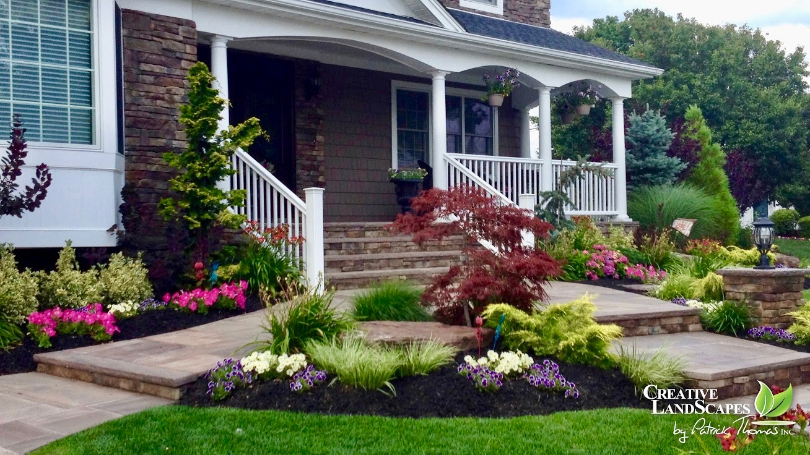
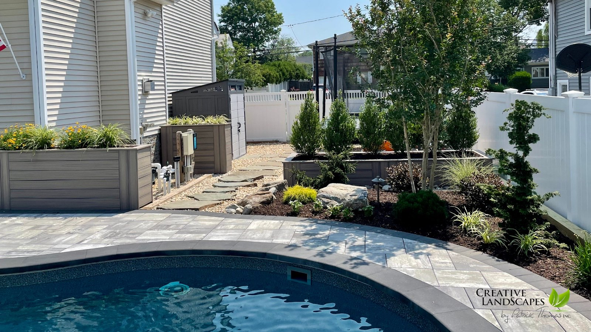
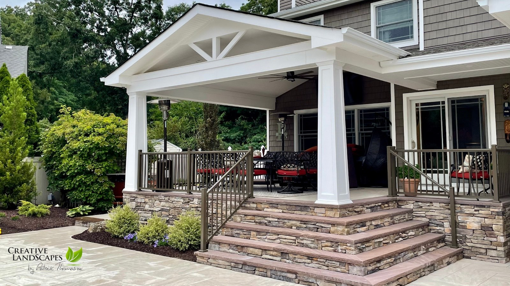
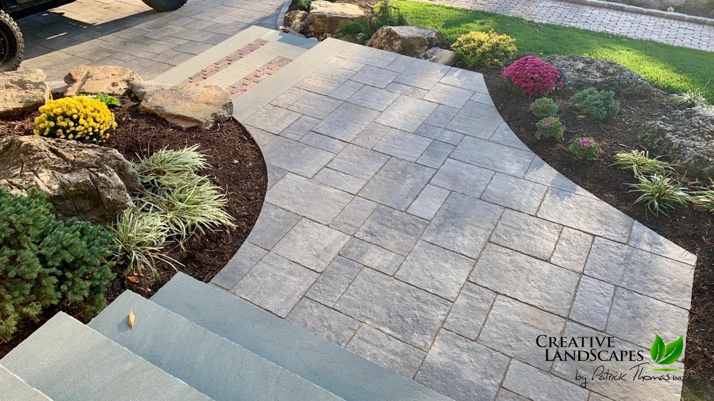
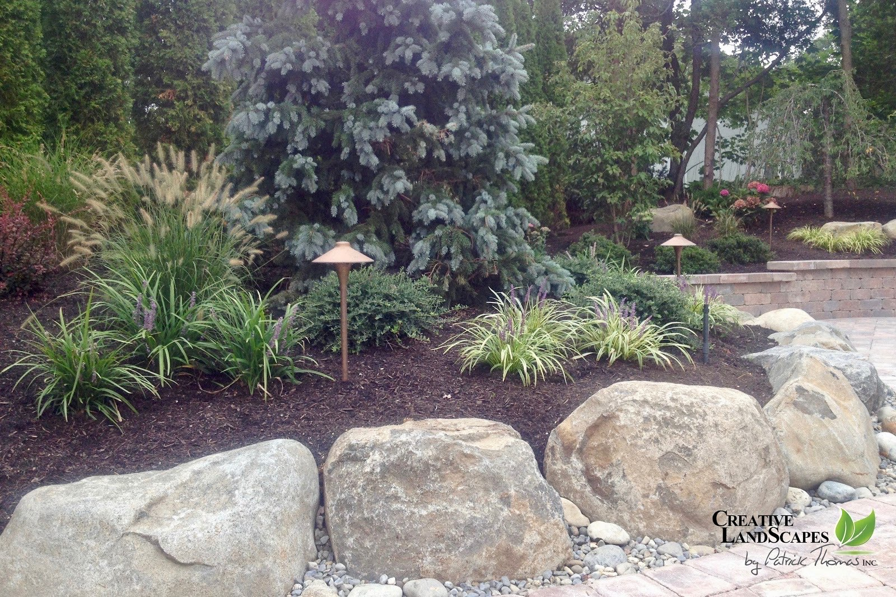
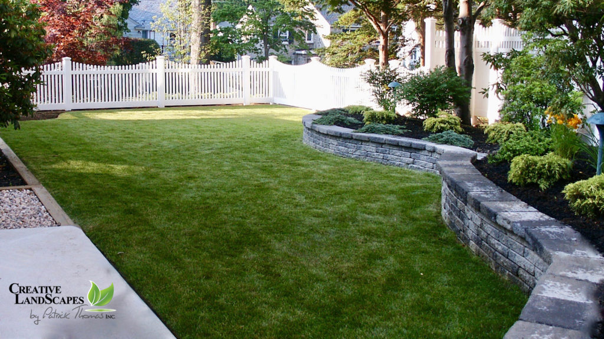
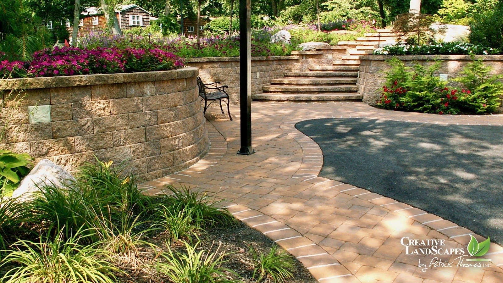

Landscape Design · Wantagh, NY
Where Beautiful
Landscapes Begin.
Patrick Thomas designs landscapes for homeowners in Wantagh, New York — paver patios, natural stone pathways, and elegant entries built to be lived in, not just looked at.
5.0 · 12 reviews on Google

A completed entry & front-yard design — Creative Landscapes by Patrick Thomas
The Portfolio
Finished work,
not renderings.
Every image below is a completed Creative Landscapes project — the same photos the studio uses on its own listing.






Like What You See?
Complimentary consultations — call to set one up.
What We Design & Build
Twelve services. One design eye.
- 01Landscape Design
- 02Paver Patio
- 03Natural Stone Pathways
- 04Natural Environments
- 05Landscape Lighting
- 06Privacy Planting
- 07Retaining Walls
- 08Elegant Entries
- 09Planter Box Design
- 10Water Features
- 11Driveway Design
- 12Citi Scapes
In Their Words
Five stars, from the homeowners who hired him.
5.0 average · 12 reviews on Google
“Patrick has been great to work with because he takes the time to understand your vision, gives practical advice for what will work best for your home, and is willing to work within your budget (and over time).”
“If your looking for an experienced landscape designer, Creative Landscapes by Patrick Thomas should be your first call. Patrick is no ordinary landscape designer. He is very passionate in what he does and leaves no rocks unturned. He has turned our yard into a beautiful oasis that we can't get enough of. He has a unique eye for design in any space.”
“He brought in river rocks, natural slate stepping stones and built the most gorgeous planter boxes.”
The Designer
Patrick Thomas
Patrick Thomas is the designer behind Creative Landscapes, working directly with homeowners in Wantagh, New York — paver patios, stone pathways, retaining walls, and plantings. Reach him directly by phone or email below.
Get In Touch
Landscape design in Wantagh, NY
- (516) 520-8733
- patrickthomasdesigns@gmail.com
- Wantagh, New York
- Call for hours